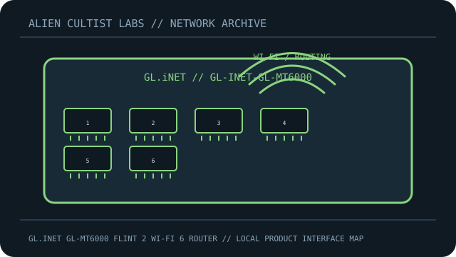

[ MODEL-SPECIFIC NETWORK HARDWARE ]
GL.iNet GL-MT6000 Flint 2 Wi-Fi 6 Router
Wi-Fi 6 router with dual 2.5GbE WAN/LAN and four Gigabit LAN ports. This record is limited to the exact named model; revisions and regional SKUs may differ.

MODEL IDENTIFICATION: Match the complete model number and revision on the manufacturer label before applying specifications. Published link rates are nominal, not measured application throughput.
Published specifications and compatibility
| Exact product | GL.iNet GL-MT6000 Flint 2 Wi-Fi 6 Router |
|---|---|
| Archive subcategory | Network appliances: routers & access points |
| Physical ports | 2 × 2.5GbE RJ-45 configurable WAN/LAN plus 4 × 1GbE LAN; USB 3.0 and USB 2.0 host ports. |
| Host / chassis interface | AC-powered router with dual-band Wi-Fi 6 radios and six external antennas. |
| Standards / protocol | IEEE 802.11ax Wi-Fi 6; 2.4GHz up to 1148Mb/s and 5GHz up to 4804Mb/s, theoretical PHY maxima. OpenWrt-based GL.iNet firmware supports VPN features. |
| Rated link and switching rates | AX6000 class is a sum of nominal radio rates, not a single-client throughput. Wired ports negotiate at 1 or 2.5Gb/s as supported by the peer. |
| Power and thermal notes | External AC adapter; use the included/label-rated supply. Router operation and peak radio performance depend on airflow and regional configuration. |
| Firmware / driver | GL.iNet firmware based on OpenWrt; update via official GL.iNet firmware for GL-MT6000 and review release notes before enabling advanced routing/VPN features. |
| Compatibility guidance | Match WAN/LAN assignment to the physical diagram, use regional firmware and observe local radio rules. Wi-Fi clients must support 802.11ax/band/channel; the 2.5GbE WAN only helps when modem/service and peer exceed 1GbE. |
Model-specific deployment notes
Flint 2 GL-MT6000 has two 2.5GbE ports plus four 1GbE LAN ports. Combined AX6000 rating sums both bands and should not be described as guaranteed Internet speed.
For a reproducible speed or interoperability test, record both link-partner models, cable/media, firmware, negotiated rate and test method. No benchmark is claimed in this archival record.
Manufacturer sources and documentation
- GL.iNET — official GL.iNet GL-MT6000 Flint 2 Wi-Fi 6 Router product specificationsManufacturer product page/specification reference for this model.
- GL.iNET — official support, manual or compatibility resourcesUse revision- and region-specific documentation for firmware, installation, media and compatibility decisions.
Source specifications describe rated capability; verify the label and current manufacturer documentation before purchase or deployment.